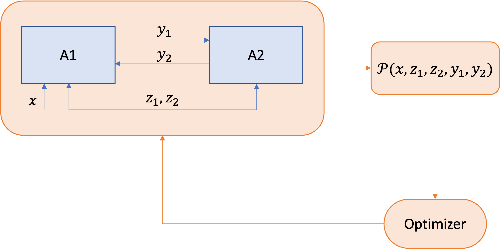
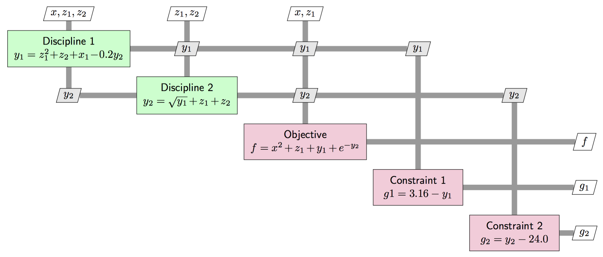
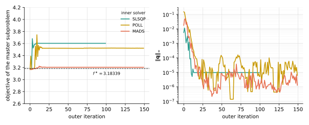

The Sellar problem#
The Sellar problem [Sellar et al., 1996] is the classic two-discipline test of MDO architectures. Its optimum is known, \(f^\ast = 3.18339\), which makes it a direct measure of how well a coordination method works. This tutorial builds it with DMDO’s Python API (the same objects the YAML builder creates) and compares three inner solvers.
The problem#


Figure 11 Data flow between the two disciplines.#


Figure 12 The Sellar problem partitioned into two subproblems.#
The two analyses form a loop: \(y_1\) depends on \(y_2\) and \(y_2\) on \(y_1\), and both depend on the shared variables \(z_1, z_2\). DMDO splits the problem into two subproblems that each keep a copy of \(z_1\), \(z_2\), \(y_1\) and \(y_2\):
where \(\phi_{z_1} = \phi(z_{1,1} - z_{1,2})\) and so on ((5) in Background). Subproblem 1 holds the objective, so it is the master subproblem.
The analyses and objectives#
Analyses take their inputs as a list and return a list of outputs; objectives take the subproblem’s design vector
x and analysis outputs y and return [f, [g1, ...]] with constraints \(g \le 0\).
def Sellar_A1(x):
return [x[0] + x[1]**2 + x[2] - 0.2*x[3]]
def Sellar_A2(x):
return [x[0] + x[1] + np.sqrt(x[2])]
def Sellar_opt1(x, y, *args):
return [x[0]**2 + x[2] + y[0] + np.exp(-x[3]), [3.16-y[0]]]
def Sellar_opt2(x, y, *args):
return [0., [y[0]-24.]]
Building the problem with the Python API#
The Python API mirrors the sections of a YAML definition:
one
variableDataper variable copy (name, subproblem, link, coupling type, bounds, baseline);one
DAper analysis and oneMDAper subproblem, listing the variables they read and the responses they compute;the
ADMMcoordinator (penalty growth \(\beta\), stall threshold \(\gamma\), update scheme, outer budget);one
SubProblemper subproblem, with its variables, responses, objective and inner solver;the
MDOprocess that ties them together and runs the coordination.
The complete setup used by the regression suite, with SciPy’s SLSQP as the inner solver:
Sellar_scipy() from tests/test_basic.py
def Sellar_scipy():
# Sellar - Two discipline problem with IDF
# Variables grouping and problem setup
x = {}
X: List[variableData] = []
# Define variable names
N = ["x", "z1", "z2", "y1", "y2", "z1", "z2", "y1", "y2"]
nx: int = len(N)
# Subproblem indices: Indices should be non-zero
J = [1,1,1,1,1,2,2,2,2]
# Subproblems links
L = [None, 2, 2, 2, 2, 1, 1, 1, 1]
# Coupling types
Ct = [COUPLING_TYPE.UNCOUPLED,
COUPLING_TYPE.SHARED,
COUPLING_TYPE.SHARED,
COUPLING_TYPE.FEEDFORWARD,
COUPLING_TYPE.FEEDBACK,
COUPLING_TYPE.SHARED,
COUPLING_TYPE.SHARED,
COUPLING_TYPE.FEEDBACK,
COUPLING_TYPE.FEEDFORWARD]
# Realistic lower bounds
lb = [0, -10, 0, 3.16, 1.77763888346, -10, 0, 3.16, 1.77763888346]
# Realistic upper bounds
ub = [10.,10.,10., 115.2, 24., 10.,10., 115.2, 24.]
# # Artificial lower bounds
# lb = [0, -10, 0, 2., 1.5, -10, 0, 2., 1.5]
# # Artificial upper bounds
# ub = [10.,10.,10., 50., 50, 10.,10., 50., 50]
# Bad artificial lower bounds
# lb = [0, -10, 0, 0., 0., -10, 0, 0., 0.]
# Bad artificial upper bounds
# ub = [10.]*9
# Baseline
x0 = [1., 5., 2., 0., 0., 5., 2., 0., 0.]
# Scaling
scaling = np.subtract(ub,lb)
Qscaling = []
# Create a dictionary for each variable
for i in range(nx):
x[f"var{i+1}"] = {"index": i+1,
"sp_index": J[i],
"name": N[i],
"dim": 1,
"coupling_type": Ct[i],
"link": L[i],
"baseline": x0[i],
"scaling": scaling[i],
"lb": lb[i],
"value": x0[i],
"ub": ub[i],
"type": "REAL"}
Qscaling.append(1./scaling[i] if 1./scaling[i] != np.inf and 1./scaling[i] != np.nan else 1.)
# Instantiate the variableData class for each variable using its according dictionary
for i in range(nx):
X.append(variableData(**x[f"var{i+1}"]))
# Analyses setup; construct disciplinary analyses
DA1: process = DA(inputs=[X[0], X[1], X[2], X[4]],
outputs=[X[3]],
blackbox=Sellar_A1,
links=2,
coupling_type=COUPLING_TYPE.FEEDFORWARD
)
DA2: process = DA(inputs=[X[5], X[6], X[7]],
outputs=[X[8]],
blackbox=Sellar_A2,
links=1,
coupling_type=COUPLING_TYPE.FEEDFORWARD
)
sp1_MDA: process = MDA(nAnalyses=1, analyses = [DA1], variables=[X[0], X[1], X[2], X[4]], responses=[X[3]])
sp2_MDA: process = MDA(nAnalyses=1, analyses = [DA2], variables=[X[5], X[6], X[7]], responses=[X[8]])
# Construct the coordinator
coord = ADMM(beta = 2.0,gamma = 0.5,
nsp=2,
budget = 100,
index_of_master_SP=1,
display = True,
scaling = Qscaling,
mode = "serial",
M_update_scheme= w_scheme.MEDIAN,
store_q_io=True
)
# Construct subproblems
sp1 = SubProblem(nv = 4,
index = 1,
vars = [X[0], X[1], X[2], X[4]],
resps = [X[3]],
is_main=1,
analysis= sp1_MDA,
coordination=coord,
opt=Sellar_opt1,
fmin_nop=np.inf,
budget=150,
display=False,
psize = 1.,
pupdate=PSIZE_UPDATE.LAST,
freal=3.160,
solver="scipy",
scipy={"method": 'SLSQP',
"options": {"disp": False,
"verbose": 0},
"is_con": True,
"tol": 1E-8})
sp2 = SubProblem(nv = 3,
index = 2,
vars = [X[5], X[6], X[7]],
resps = [X[8]],
is_main=0,
analysis= sp2_MDA,
coordination=coord,
opt=Sellar_opt2,
fmin_nop=np.inf,
budget=150,
display=False,
psize = 1.,
pupdate=PSIZE_UPDATE.LAST,
solver="scipy",
scipy={"method": 'SLSQP',
"options": {"disp": False,
"verbose": 0},
"is_con": True,
"tol": 1E-8})
MDAO: MDO = MDO(
Architecture = MDO_ARCHITECTURE.IDF,
Coordinator = coord,
subProblems = [sp1, sp2],
variables = X,
responses = [X[3], X[8]],
fmin = np.inf,
hmin = np.inf,
display = True,
inc_stop = 1E-9,
stop = "Iteration budget exhausted",
tab_inc = [],
noprogress_stop = 100)
# Run the MDO problem
p_file: str = os.path.abspath("./tests/test_files/Sellar_Scipy.out")
MDAO.run(p_file)
# Print summary output
print('------Run_Summary------')
print(MDAO.stop)
print(f'q = {MDAO.Coordinator.q}')
for i in MDAO.Coordinator.master_vars:
print(f'{i.name}_{i.sp_index} = {i.value}')
fmin_main = 0
hmax = -np.inf
hmax_main = hmax
for j in range(len(MDAO.subProblems)):
fmin = MDAO.subProblems[j].opt([s.value for s in MDAO.subProblems[j].get_design_vars()] , \
MDAO.subProblems[j].MDA_process.getOutputs())[0]
hmax = MDAO.subProblems[j].opt([s.value for s in MDAO.subProblems[j].get_design_vars()] , \
MDAO.subProblems[j].MDA_process.getOutputs())[1]
print(f'SP_{MDAO.subProblems[j].index}: fmin= {fmin}, hmin= {hmax}')
if MDAO.subProblems[j].is_main:
fmin_main = fmin
hmax_main = hmax
print(f'P_main: fmin= {fmin_main}, hmax= {hmax_main}')
print(f'Final obj value of the main problem: \n {fmin_main}')
return fmin_main, hmax_main, max(MDAO.Coordinator.q)
scipy={"method": "SLSQP", ..., "is_con": True} passes the subproblem constraints to SLSQP as inequality
constraints. Replacing solver="scipy" by solver="poll" or solver="mads" (and the scipy block by an
OMADS configuration, conf=) switches the subproblems to the derivative-free OMADS solvers; Sellar_OMADS_POLL
and Sellar_OMADS_MADS in the same file show the complete setups.
Running the same problem through a Session instead of MDAO.run gives step-by-step control and a
RunResult:
from DMDO import Session
session = Session(MDAO) # MDAO: the MDO object built above
result = session.run()
print(result.objective, result.max_inconsistency)
Results with three inner solvers#
The regression suite records the complete history of the three variants (see Benchmarking):
Inner solver |
Outer iterations |
Final objective |
Gap to \(f^\ast\) |
Final max. inconsistency |
|---|---|---|---|---|
SciPy SLSQP |
100 |
3.60373 |
+13.20 % |
\(9.7\times10^{-6}\) |
OMADS |
150 |
3.52160 |
+10.62 % |
\(6.2\times10^{-6}\) |
OMADS |
150 |
3.20420 |
+0.65 % |
\(1.3\times10^{-6}\) |


Figure 13 Objective of the master subproblem (left) and maximum inconsistency (right) with the three inner solvers.#
All three variants reach consistency to better than \(10^{-5}\), but only the full MADS algorithm, whose search step explores the subproblem design space globally, ends close to the optimum. The gradient-based SLSQP subproblems lock in a consistent design within a few outer iterations, before the coordination has found the best one. The inner solver is therefore a modeling choice of its own: DMDO lets every subproblem use a different one.